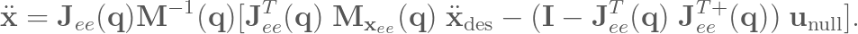

Kinova Gen3 Modular Arm Controller
Objective
Developed a robotic arm controller using operational space control for manipulation.
Keywords
- Joint Controller
- Operational Space Control
- Manipulation
Results
The Kinova Gen3 Modular Arm Controller utilizes Operational Space Control to convert position commands into joint torque commands. In this robotic controller, all 7 degrees of freedom are utilized through the help of a null-space filter integrated in the primary control signal.
The control framework is able to do basic manipulation task such as picking up a object while the base is moving. The controller has been tested in PyBullet and iGibson for enivormental interaction